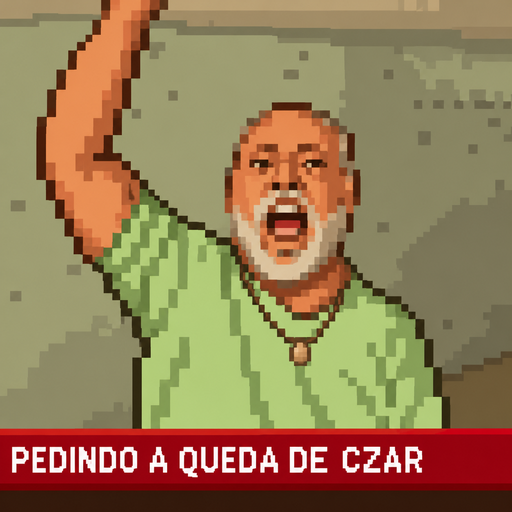

ENTRE REVOLUÇÕES
1789–1799 FRANÇA
0 / 10
Ponto histórico
JOGO EDUCATIVO DE HISTÓRIA
ENTRE
REVOLUÇÕES
Duas épocas. Duas revoluções. Dezessete tópicos para entender como antigos regimes foram contestados.
LIBERDADE IGUALDADE MUDANÇA
✦
PersonagemMorador da época
1 / 2PRIMEIRA JORNADA CONCLUÍDA
1917
Agora, a Rússia.
Um novo império, outra crise e novas ideias em disputa.
FIM DA JORNADA 1789 → 1917
Duas revoluções.
Mundos transformados.
A Revolução Francesa abalou a monarquia e difundiu ideias de cidadania e igualdade jurídica. A Revolução Russa derrubou o czarismo e abriu caminho para um Estado socialista. Ambas nasceram de crises profundas — e seus resultados continuaram a influenciar a história.
8marcos explorados2revoluções1jornada
Personagens fictícios inspirados em grupos sociais da época. As falas resumem fatos históricos.